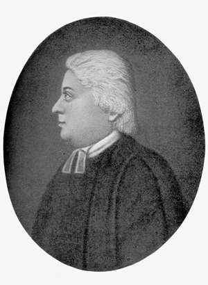

by Stefan Bielinski Reverend Thomas Ellison was rector of St. Peters Episcopal Church from 1787 to 1802. Although others provided some services to former Anglicans after the War for Independence, he was the first permanent priest at St. Peters following the change from the Church of England to an independent American Episcopacy.
 Born in 1759, Ellison's background and training are the subjects of some speculation. By April 1787, he was serving at St. Peters and he and his wife Isabella had taken up residence at the Albany rectory. They were welcomed to Albany by a church vestry that included prosperous merchants and prominent public officials. His social connections were further cemented by membership in the nearby Masonic Lodge. Ellison's principal task was to rehabilitate a parish that had been surpressed and scattered during the war. Even though its direct connection with England had been severed, Ellison's principal members continued to be those of British ancestry - including many Englishman of recent arrival. The twenty-eight-year-old Ellison was able to re-establish regular services, recruit new members, refurbish the church located in the middle of upper State Street, oversee the relocation of the church cemetery, and also reach out to English speaking people in the Albany hinterland. Ellison made an immediate and positive impact on the spiritual life of booming post-war Albany. He was considered "a preacher of great power, a scholar of exactness and elegance, a teacher able and successful, a companion witty and agreeable." Ellison was gaining repute beyond the Albany orbit as well - attending regional conventions, undertaking missions into central and northern New York, seeking to establish the Episcopal church in Vermont, and making inquiries about restoring church lands taken during the Revolution. By 1793, the Ellisons had moved into the new parsonage on Lodge Street where the rector also boarded a number of his students - one of whom was young James Fenimore Cooper. A few years later, Ellison was one of the trustees of the new "Albany City School." In November, he was credited with taking the lead in preventing a "great fire" from destroying even more of the city. In 1797, Ellison was appointed to the New York State Board of Rgents. Under Ellison's leadership, St. Peters grew to a point where a new church was needed and the rector supervised the planning for a larger building that would be located out of the middle of the main street. In the initiative to obtain a proper site for the new St. Peters, the city fathers found Ellison a formidable and determined petitioner. But, by the early 1800s, Ellison had become "dangerously ill" and could only watch the construction of the new church from the stoop of his rectory - "too feeble to walk out." The nature of his illness is unknown. But Thomas Ellison died on April 26, 1802 at the age of forty-three. He was the last to perform services in the old St. Peters church. Dead by 1803 when new church was consecrated, Thomas Ellison was succeeded by Rev. Frederick Beasley. Ellison's career has been summarized in Joseph Hooper, A History of St. Peter's Church in the City of Albany (Albany, 1900). He may have been educated at Queens College of Oxford. Ellison's life has become an active research concern for the Colonial Albany Project. This likeness of Thomas Ellison is "From an Old Engraving" printed in Hooper, History of St. Peter's, opposite p. 132. Description of Ellison's character quoted in Hooper, History of St. Peter's, p. 132. first posted: 7/6/00; last revised 8/4/09 |